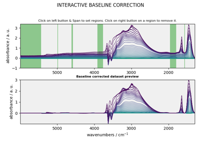

Example’s gallery¶
Many examples on the use of the API can be found in this gallery. Notebook and standalone python scripts can be downloaded using the link at the bottom of each example.
Table of Contents
Example of the analysis package usage¶

MCR-ALS optimization example (original example from Jaumot)
MCR-ALS optimization example (original example from Jaumot)


EFA analysis (Keller and Massart original example)
EFA analysis (Keller and Massart original example)

Example of the fitting package usage¶


How to use NDDataset¶
Example of how to create and manipulate NDDataset in SpectroChemPy


Plotting dataset examples¶
Example of how to plot datasets in SpectroChemPy

Processing dataset examples¶
Example of how to process NDDataset (or more generally NDPanels in SpectroChemPy)

NDDataset baseline correction
Exponential window multiplication
Exponential window multiplication

Sine bell and squared Sine bell window multiplication
Sine bell and squared Sine bell window multiplication
Project Management¶
Example of how to create and manipulate Projects in SpectroChemPy
Project creation
Read / Write¶
Example of import or export function in SpectroChemPy
Loading Bruker OPUS files